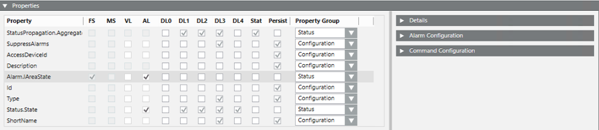
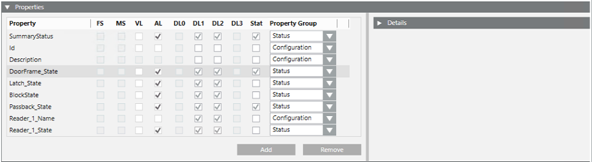
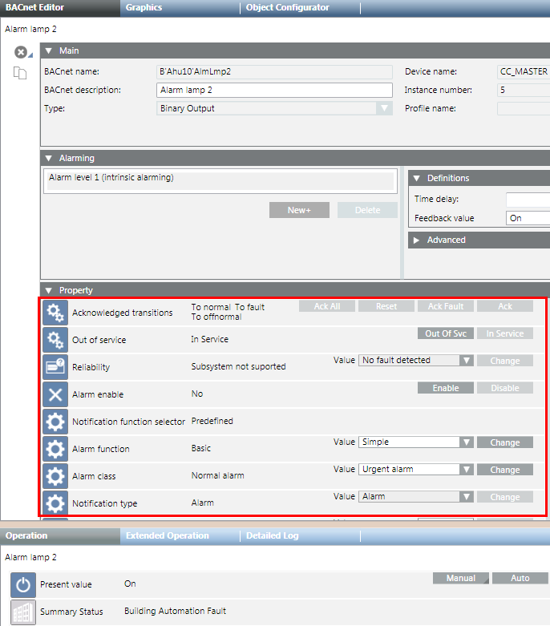
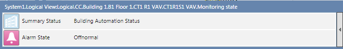
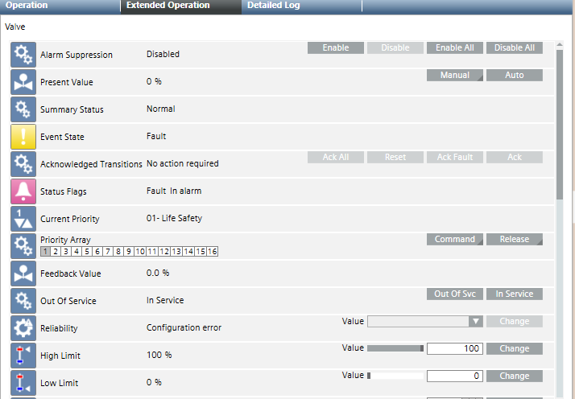

Properties Expander
In the Models & Functions tab, the Properties expander lists all the properties of the selected object model or function. Here you can perform various configurations including:
- View the alarm definition settings
- Define how properties are logged
- Set visibility of properties and how they are displayed
- Define backup settings within the system
A number of check boxes and selection lists let you view or define various settings for each property. In addition, expanders on the right provide further configurations for the property selected in the list. The specific configurations available vary depending on whether you have selected an object model or a function.


Item | Description |
Property | List of all available properties for the selected object model or function.
|
FS | Read-only check box. Indicates whether the property has a Field System (FS) alarm configured. |
MS | Read-only check box. Indicates whether the property has a Management Station (MS) alarm configured in the Alarm Configuration expander for this property. |
VL | The property is logged in the Value Log (VL) of the History Database.
|
AL | The property is logged in the Activity Log (AL) of the History Database. |
DL0 | (object models only ) The property is visible in configuration expanders (System Manager in Engineering mode). |
DL1 | The property is visible in the Status and Commands window available for graphic objects. |
DL2 | The property is visible in the Operation tab. |
DL3 | (object models only ) The property is visible in the Extended Operation tab. |
DL4 | (object models only ) The property is exposed to the OPC server interface and other northbound interfaces in future that will make use of this setting. |
Stat | Select this check-box to enable off-normal status configuration for this property in the Details expander. |
Persist | (Object Models only ) If set, the value of the property is saved in case Desigo CC is stopped and restarted. This option is set for the configuration of properties that must be already have a value assigned at system start-up (for example, the IP address of a control unit to connect). |
Property Group | Used to assign a property to a specific group for which you can configure different access levels and visibility in the Security configuration. |
Add | (Functions only) Adds a new property to the function |
Remove | (Functions only) Deletes the selected property from the function |
Display Level (DL) Examples
The following screenshots show some examples of how properties are displayed with the different display level (DL) settings.
DL0 (Engineering)
If the DL0 check box is set, the corresponding property displays in the configuration expanders, such as the BACnet Editor.

DL1 (Status and Commands Window in Graphic)
This window opens in the graphic when an alarm or event occurs. The property displays here if the DL1 check box is set.

DL2 Standard (Operation)
If the DL2 check box is set, the corresponding property is displayed in the Operation tab.

DL3 Details (Extended Operation)
If selected, the corresponding property is displayed in the selected view according to the Object Model.
